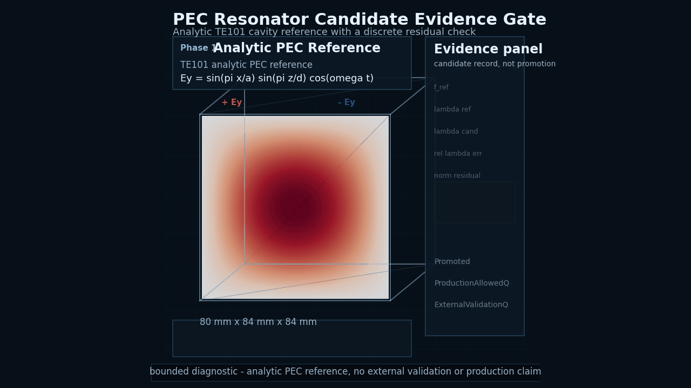
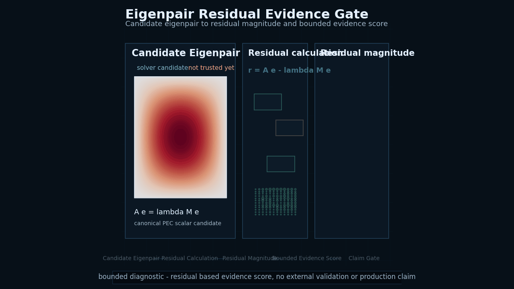
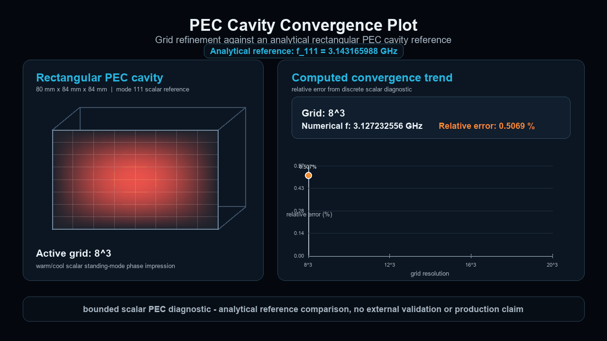

Residuals
Candidate fields and modes need residual records before they can support stronger interpretations.
Evidence Contract Framework
Trustworthy CEM starts after the field plot. DAD FieldWorks is being developed toward an evidence-controlled full-wave computational electromagnetics solver platform.

Analytic TE101 cavity reference with a discrete residual check.

An analytic PEC reference is used to form a TE101 style rectangular cavity field. That field is sampled as a discrete candidate, then checked with a finite difference residual diagnostic. The evidence panel shows reference and candidate quantities, relative error, normalized residual and an Evidence Gate Pending or candidate state.
The animation does not ask the viewer to trust a field plot by appearance. It shows the result as a candidate record. The candidate remains bounded until residual, reference and claim boundary checks justify a stronger statement. ProductionAllowedQ remains false, ExternalValidationQ remains false, and the visualization is diagnostic only, not physical mode acceptance evidence, not external validation and not a production solver claim.
Candidate eigenpair to residual magnitude and bounded evidence score.

After a solver or candidate generator produces a candidate eigenpair, DAD FieldWorks computes the residual r = A e - lambda M e, reports the residual magnitude and derives a bounded evidence score. The claim gate records that the result is a bounded diagnostic candidate.
A solver output is a claim, not truth. DAD FieldWorks checks the claim before it can be promoted. ProductionAllowedQ remains false, ExternalValidationQ remains false, and this visual is diagnostic only, not physical mode acceptance evidence, not external validation and not a production solver claim.
Grid refinement against an analytical rectangular PEC cavity reference.

The analytical reference is the closed-form mode 111 frequency for an 80 mm x 84 mm x 84 mm rectangular PEC cavity. The numerical sequence uses a deterministic scalar finite-difference diagnostic at multiple grid resolutions. The plot shows the relative error decreasing as the grid is refined.
DAD FieldWorks does not ask the viewer to trust a field image by appearance. This diagnostic shows a numerical sequence, an analytical reference and a computed error trend. A result becomes more meaningful when the error path and claim boundary are visible.
DAD FieldWorks treats solver output as a candidate claim until residual checks, reference comparisons, reproducibility records and claim boundaries define what it is allowed to say.
The long-term target is a native full-wave solver platform in which numerical outputs carry evidence records by default. A field, eigenpair or spectrum is not promoted because it looks plausible.
The current internal alpha direction has moved from candidate and residual diagnostics into records for residual threshold and analytical comparison gates, with physical eigenpair acceptance gate planning now open as a records-only next step.
Evidence gate progression
The current public-safe path is a bounded internal alpha evidence story. Physical eigenpair acceptance remains planning only, while external validation and production remain closed.
Why this matters
CEM results can be visually convincing while failing residual, boundary-condition, energy, divergence, reference or reproducibility checks. DAD FieldWorks is being shaped around evidence records that say what was checked, what failed, what remains bounded and what the result is allowed to claim.
Candidate fields and modes need residual records before they can support stronger interpretations.
Boundary-condition and finite-value checks prevent plausible pictures from outrunning the evidence.
Analytical comparison rows keep reference scope separate from visual diagnostics.
Production and validation gates remain closed unless the evidence record supports opening them.
Additional diagnostics
The remaining public visuals are diagnostic communication assets. They show field behavior, resonator ringdown and PEC cavity mode slices without changing the evidence-gate claim boundary.

Time-domain build-up, ringdown and spectrum derived from the probe signal.

Standing scalar eigenmode field-slice diagnostic for a bounded reference path.
Evidence Contract Roadmap
The long-term target is an evidence-controlled full-wave CEM solver platform. Future DGTD and physics-AI routes remain future research directions whose outputs would stay candidate records until evidence gates support bounded claims.
Read the platform roadmap
Backend gates
| Stage | Direction | Public Claim Boundary |
|---|---|---|
| Current alpha evidence layer | Candidate, residual and analytical comparison records | Bounded internal alpha evidence only |
| Current planning step | Physical eigenpair acceptance gate planning | Planning only, no physical acceptance execution |
| Near term | Residual threshold and acceptance gate hardening | Internal classification only |
| Mid term | Native solver core hardening and artifact replay | No production solver claim |
| Long term | Evidence-controlled full-wave CEM solver platform | Future target, no current production claim |
| Future research route | DGTD and physics-AI backends under evidence contracts | Future route only |
Central claim boundary
DAD FieldWorks public materials show architecture notes, whitepaper material and diagnostic visualizations from a private research and development project.